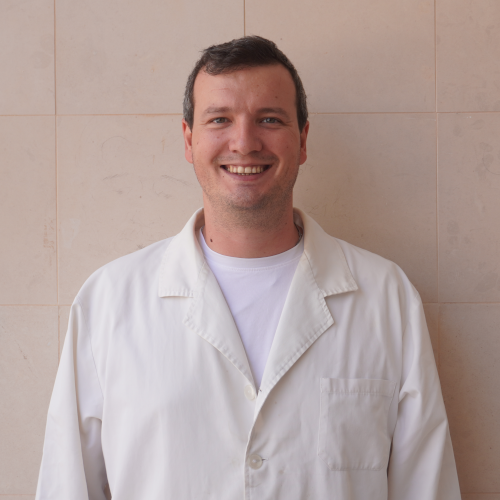

Rodrigo Borges
Research Support Technician Office 2.6 (Inside of Laboratory 2.8) Building 7 Contact: roborges@ualg.ptRodrigo Borges is a Technician of Centro de Investigação Marinha e Ambiental (CIMA), where he gives technical support to the laboratory activities of the Environmental Systems and Resources research line. Rodrigo is responsable for the management, maintenance and operation of common use analytical equipments, assuring their optimal functioning and supporting researchers in laboratory analysis and experimental methodology development.
His activity focuses on the implementation of advanced analytical methods for chemical and physico-chemical characterization of environmental, biological and industrial samples, as well as the development and optimization of laboratorial methods. Besides this, Rodrigo also manages laboratory wastes and consumables, organizes analytical data and gives technical support during field work, assuring proper functioning across CIMA's laboratories.
Specialization Areas:
- Ultra-High Performance Liquid Chromatography (UHPLC);
- Mass Spectrometry (LC-MS/MS);
- FTIR Spectrophotometry;
- Elemental Analysis (CHNS/O);
- Automized Colorimetric Analysis;
- Multimode Microplate Reading;
- Respirometry Assays;
- Analytical method development and validation;
- Sample preparation and characterization;
- Scientific equipment management and maintenance;
- Laboratory waste management;
- Analytical data management;
Available Services:
Researcher can contact Rodrigo for:
- Analytical method development and optimization;
- Instrumental analysis planning and execution;
- Analytical equipment usage support;
- Laboratory equipment training for new users;
- Analytical results interpretation;
- Experimental protocol development;
- Chemical and physico-chemical sample characterization;
- Scheduling the use of common use equipments;
- Laboratory consumables and reagent management;
- Laboratory waste management;
- Field work and research project technical support;